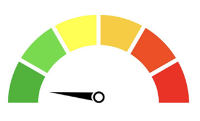

Sistem kami membantu Anda memahami risiko pra-diabetes dengan menganalisis data kesehatan Anda dan memberikan rekomendasi gaya hidup yang dipersonalisasi.
Isi informasi kesehatan Anda seperti usia, berat badan, riwayat keluarga, dan kebiasaan hidup untuk mendapatkan penilaian risiko yang akurat.
Sistem kami akan menganalisis data kesehatan Anda untuk menilai risiko pra-diabetes berdasarkan berbagai faktor.

Berdasarkan hasil analisis, Anda akan menerima rekomendasi gaya hidup yang dipersonalisasi untuk mengurangi risiko pra-diabetes.
Dapatkan rekomendasi pribadi untuk pola makan yang lebih sehat, olahraga, dan kebiasaan sehari-hari.